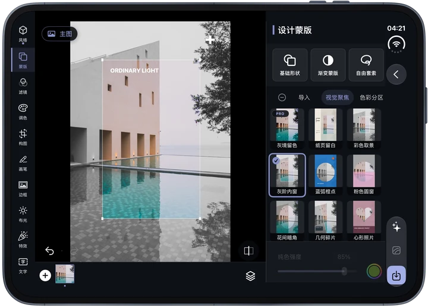

先说清楚要改变哪里
先决定问题是整张照片的方向，还是某一处的亮度、颜色或风格。全图都需要改变时，可以先整体调色；只有局部需要调整时，再限定变化区域。
几何蒙版适合边界明确的区域，画笔适合需要亲手描画的范围。沿着对象的实际边界检查，不要只在缩小的预览里判断。
看真实界面中的局部编辑
展开 iPhone Duo 横屏编辑时，照片和蒙版工具会并排显示。先检查矩形蒙版的四角，再沿边缘确认有没有覆盖想保留的细节。


从范围到成片的检查顺序
- 选择要处理的区域，确认蒙版覆盖位置和大小。
- 应用需要的局部效果，调整强度，检查蒙版边缘。
- 放大查看主体、头发或建筑轮廓附近是否出现不需要的变化。
- 缩回整图，比较局部是否仍与画面协调；必要时撤销或继续调整。
- 保存前再检查整体与局部，保留原图以便比较。
仿色后还能继续局部调整吗？
可以在确认仿色后进入编辑器，继续处理局部。参考图可以帮助建立方向，蒙版与画笔帮助你决定哪些区域还需要调整。
局部编辑也需要选择范围和人工判断；不要把它理解成能自动准确识别所有人物、天空或物体。